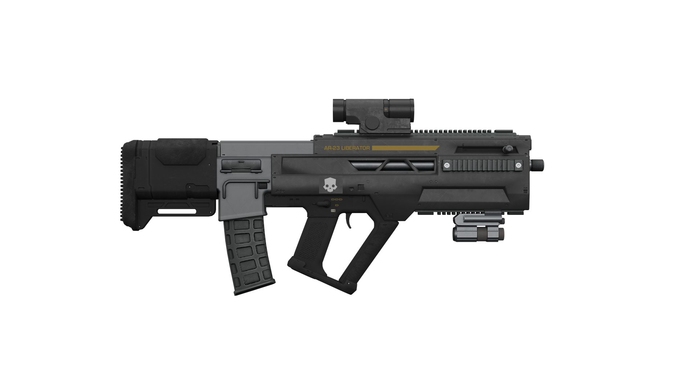
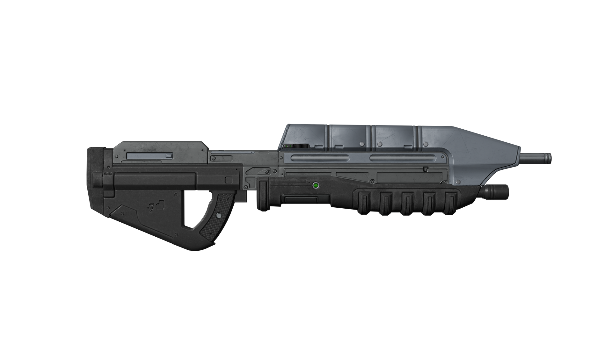
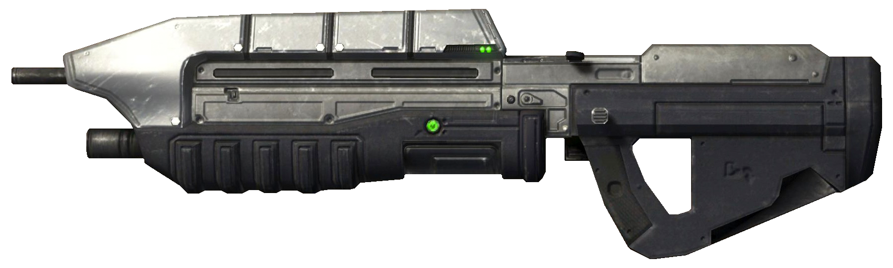
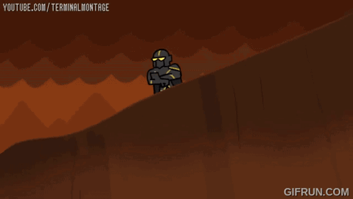
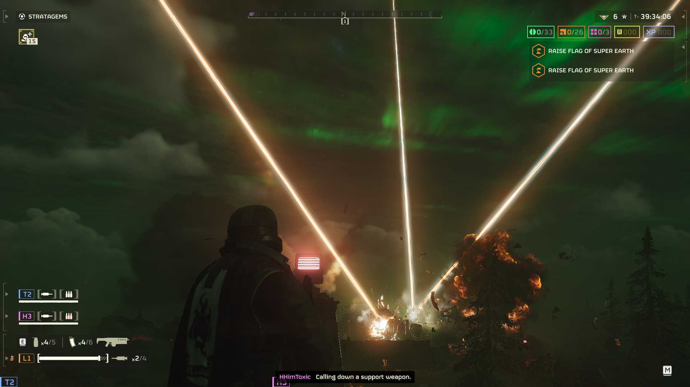
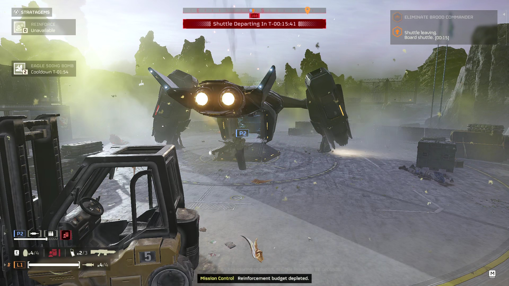
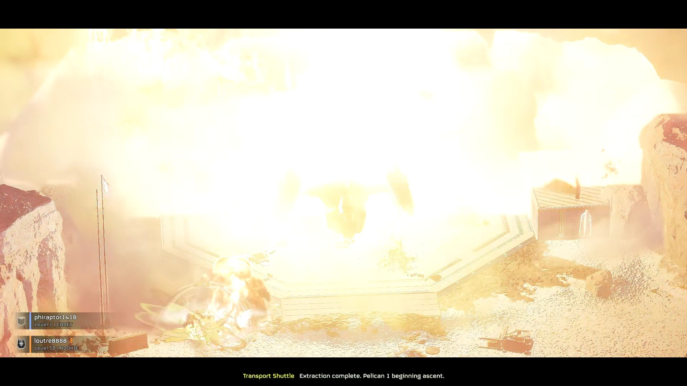
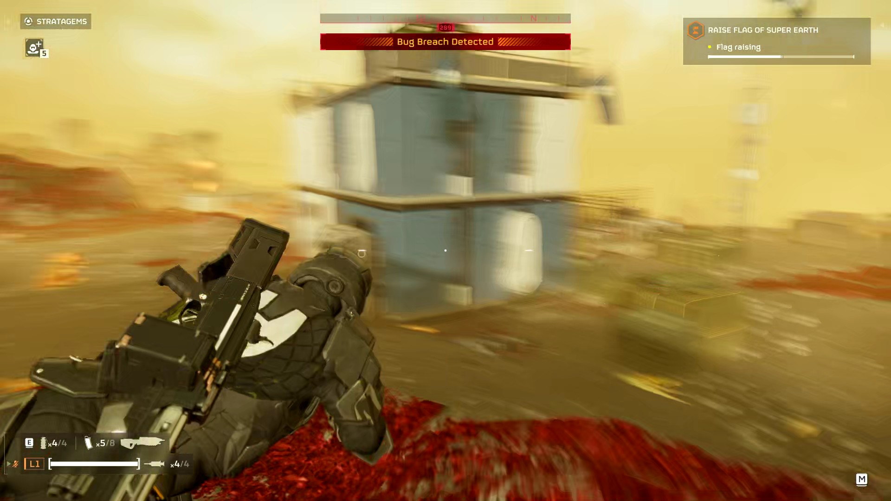

Developement History
Helldivers 2 is a video game developped by Arrowhead Game Studio. Helldivers 2 is PvE game that uses a deprecated engine (the Autodesk Stingray engine (formely known as Bitsquid)) but manages to run smoothly, especially after Arrowhead removed all unneeded files, like over 100Gb of duplicate files, down to just a little over 22Gb. Arrowhead is pretty tolerant in regards to mods, at least, as long as the mods are cosmetic or sound replacement mods, like the 'Megumin Hellbomb', or the 'Miku Miku Beam!!!!' orbital laser mods, as they are only sound replacement mods.
Synopsis and Info
In Helldivers 2, you are a Helldiver, an elite soldier of Super Earth, fighting for Managed Democracy, against three forces of tyranny: the
Terminid Horde, the
Automaton Legion and the
Illuminate. You have Access to a vast
array of weapons, from the standard issue 'AR-23 Liberator', to the 'MA5C' from 'Halo 3: ODST'. Each weapons can be found in a warbond, each of them unlocked
using 'Super Credit', and the content of the warbonds is unlocked with warbond medals. the warbond medals and the super credits can be found while playing the
game, and considering that super credits are the premium/paid currency of the game, fiding them while playing casualy makes the game one of the few live
service games where the premium currency isn't locked behind a paywall. The most important mechanic of the game however, is the stratagems.
AR-23 Liberator:

MA5C (Helldivers 2)

MA5C (Halo 3: ODST)

Stratagems
How it feels to input a stratagem:

In Helldivers 2, your firepower doesnt come from the gun in your hands, but from your Super Destroyer in orbit. Stratagems can be orbital weapons, such as the obital laser, air support from Eagle 1, like the 500Kg bomb, or a support weapon, such as the 'M-105 Stalwart'.
3 Orbital Lasers at the same time:

Eagle 500Kg Bomb (left: landed; right: during explosion):


M-105 Stalwart (on player's back):

BONUS!!
A fun game to practice stratagems, straight in your browser!
Stratagem Hero Online
Mod Support Examples
Here are some examples of allowed mods:
Orbital Laser:
Hellbomb/Portable Hellbomb:
Hellbomb:
Portable Hellbomb